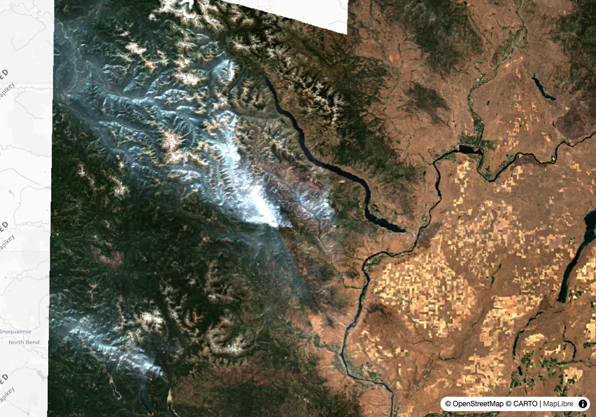
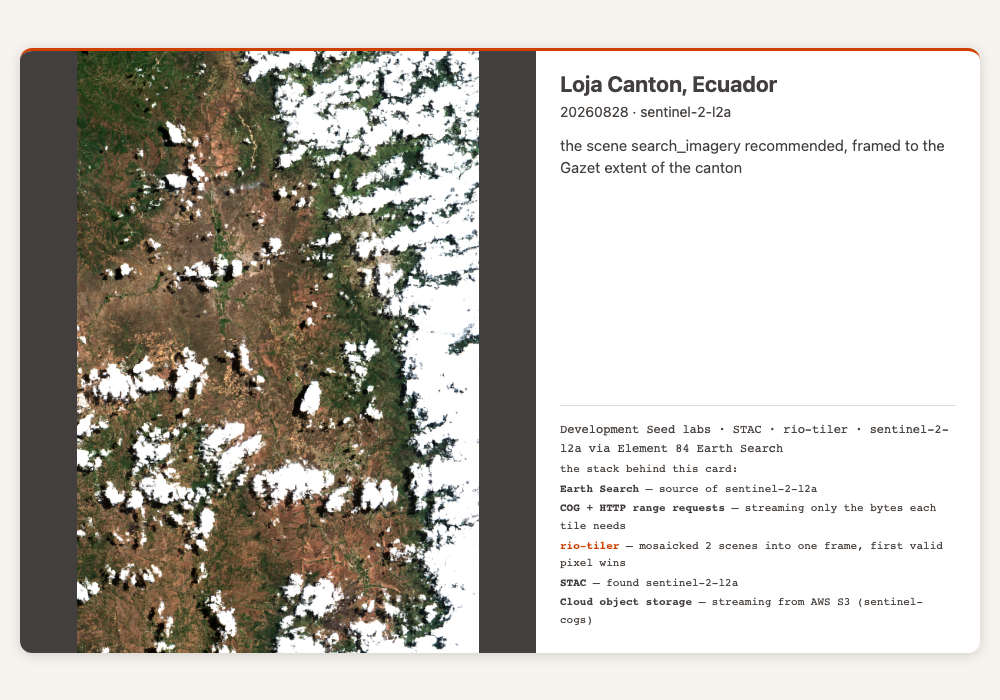
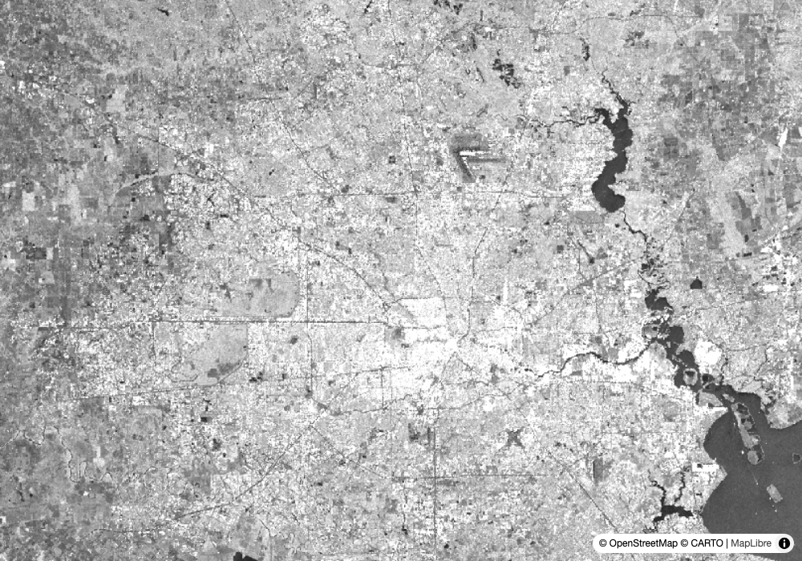
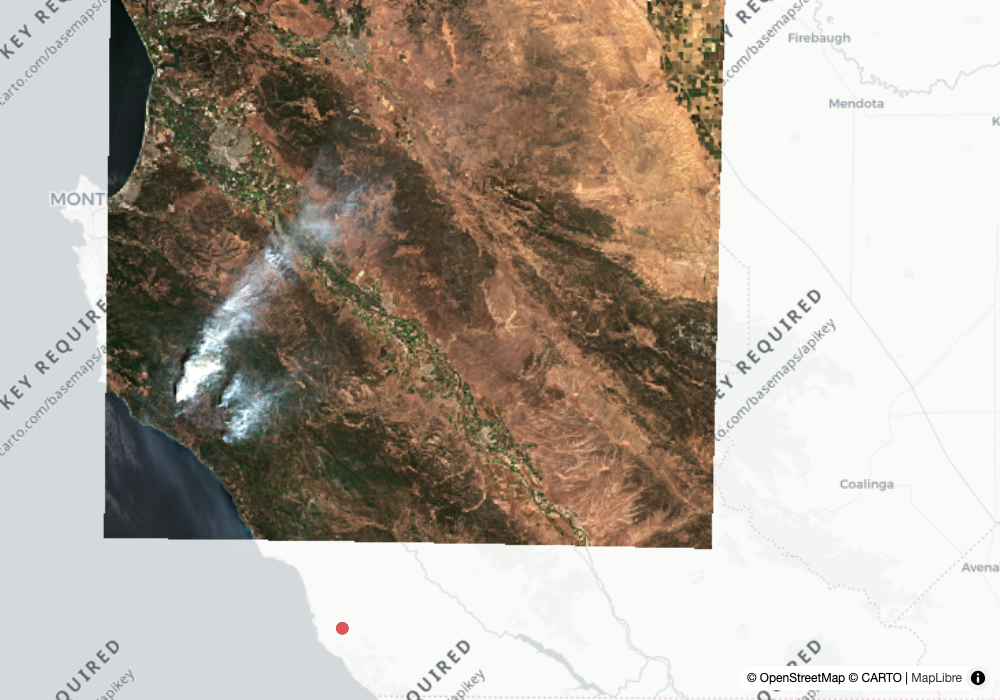
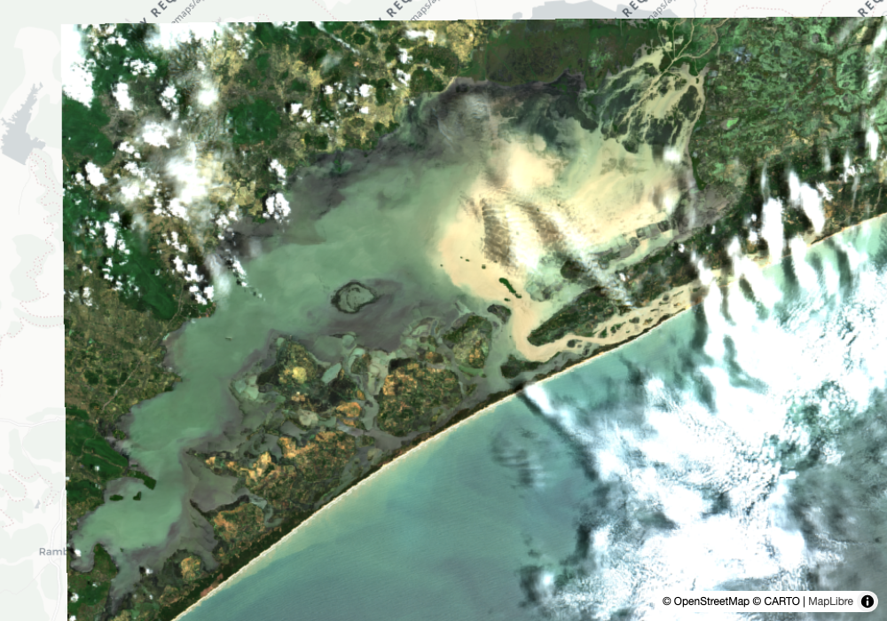
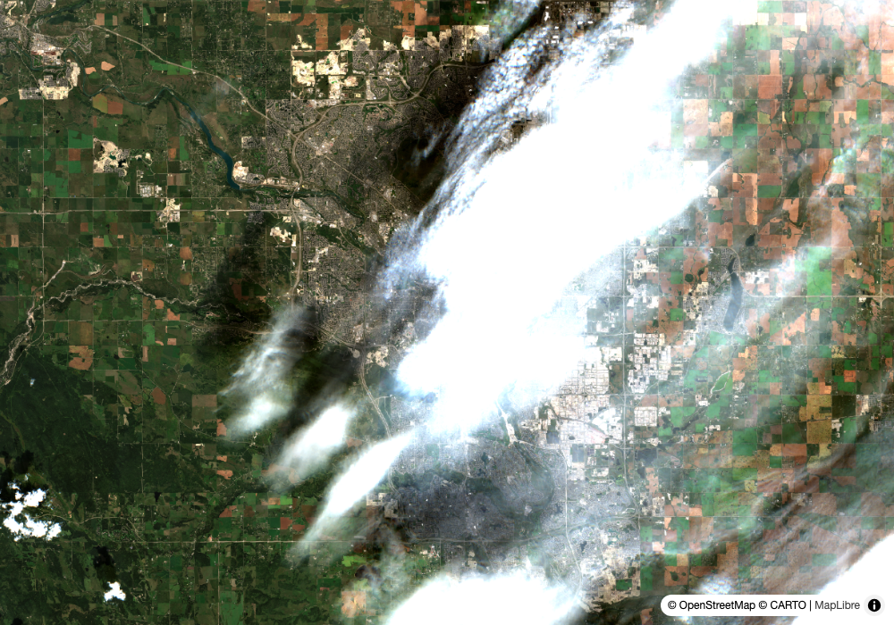
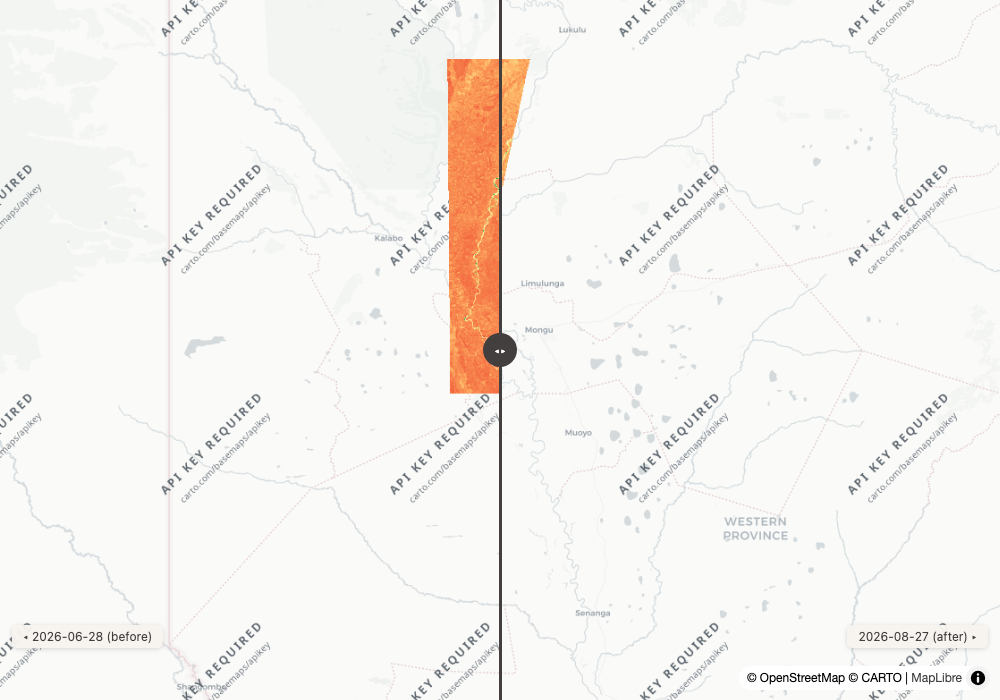
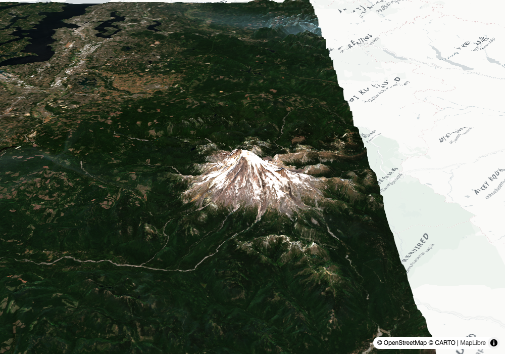
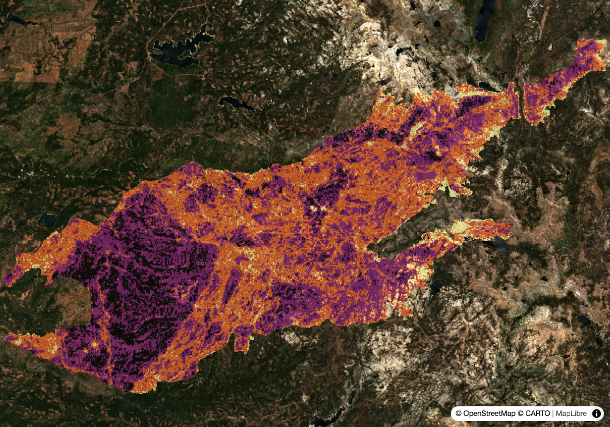

Round 1 — our own geocoder, answering for the first time (PR #32)
1
geocode
roadshow demo
Input
Where is Chelan County, and what is the freshest usable Sentinel-2 look at the whole county?
What the tools returned
geocode("Chelan County")
source: gazet name: Chelan County (US, county)
bbox: [-121.181, 47.261, -119.860, 48.551]
search_imagery(sentinel-2-l2a, 20 days, cloud ≤40, limit 10)
recommended: S2C_10UFU_20260824_1_L2A cloud 0.6 covers_aoi_pct 48.9
reason: "0.6% cloud but covers 48.9% of the area; the clearest scene (0.0% cloud) covers 17.1%.
No single scene covers this area and no same-day set does either within these 10 results;
raise limit or relax max_cloud_cover to find one"
search_imagery(sentinel-2-l2a, 30 days, cloud ≤60, limit 40)
full_coverage_set: 2026-08-24 · 10UFU + 10TFT + 10UGU + 10TGT + 10UGU (5 scenes)
render_map(coverage_set, stack_layer) → state.coverage_pct 100.0, no coverage_note
stack panel: Earth Search · TiTiler · Gazet
Our read
For the first time in eight field tests the place came from our own index: Gazet returned the county's real boundary extent, not a Nominatim point or a guess. That extent is also what made the second half honest. A county is bigger than any Sentinel-2 scene, and the first search said so in the return rather than leaving a 49% scene to be rendered as the answer. Forty results and a looser cloud filter found the same-day set, and the map covers the whole county with the panel crediting the geocoder that actually answered.
live artifact ↗Learning → Pass 1 rendered the 49% scene. The map carried a coverage_note, but the recommendation ended at "covers 17.1%" and said nothing about why no set existed. The sentence after it was added mid-test. The bigger lesson is in Round 4: over a county the answer is a set, not a scene, and the client-side bbox set is starved by limit and by cloud.
geocode source: gazet · recommended with the starved-set sentence · full_coverage_set · the panel credits one geocoder
2
geocode
someone who typed one word
Input
Show me Loja.
What the tools returned
geocode("Loja")
source: gazet name: Loja Province (EC, region) bbox: [-80.485, -4.749, -79.101, -3.330]
geocode_note: "2 places match 'Loja' equally well; using Loja Province (EC, region) at 4.0S 79.8W,
not Loja Canton (EC, county) at 4.1S 79.3W. Pass the fuller name if another was meant"
geocode("Loja Canton")
source: gazet bbox: [-79.546, -4.511, -79.101, -3.673]
search_imagery(sentinel-2-l2a, 45 days, cloud ≤60, limit 20)
recommended: S2C_17MPR_20260828_0_L2A cloud 19.1 covers_aoi_pct 98.2
reason: "19.1% cloud, covers 98.2% of the area, and newest of 3 near-equal scenes;
the clearest (18.7% cloud) is from 2026-08-03"
full_coverage_set: 2026-08-28 · 17MPR + 17MQR
render_postcard(bbox = canton, fill_item_ids = [17MQR]) → mosaic_scenes 2
Our read
Two real Lojas score identically, and the tool says which one it took and where the other is. We took its advice: the province is 150 km across and the best scene saw a quarter of it, the canton is one scene and a sliver. The card is the recommended scene framed to the canton's Gazet extent, with the same-day neighbour filling the sliver as a rio-tiler mosaic.
live artifact ↗Learning → Two things were wrong on pass 1, both ours. We ignored our own note and made a card of a 24% scene. And the recommender took an Aug 3 scene over Aug 28 for 0.4 points of cloud. Coverage and cloud now have 5-point tie bands, the newest scene wins inside them, and the reason says when freshness decided.
geocode_note on ties, with positions · recommended with tie bands · postcard mosaic via fill_item_ids
3
live event
insurance analyst, Sep 2
Input
Harris County, with Edouard coming ashore: conditions right now, when radar next sees it, and put the storm on the latest radar.
What the tools returned
geocode("Harris County")
source: gazet bbox: [-95.961, 29.497, -94.908, 30.171]
geocode_note: "2 places match 'Harris County' equally well; using Harris County (US, county) at 29.8N 95.4W,
not Harris County (US, county) at 32.7N 84.9W. Pass the fuller name if another was meant"
conditions_brief("Harris County")
signals: "last rain ≥1mm was 0 days ago"
"peak wind today 20 km/h from the SW"
"2 active storms within ~150 km"
events: EONET Tropical Storm Edouard 2026-09-02 09:00Z (-95.0, 30.8)
GDACS Tropical Cyclone EDOUARD-26 alert Green (-94.6, 30.5)
latest_look: S2B_15RTN_20260830_0_L2A cloud 7.1 covers_aoi_pct 34.9
next_looks: SENTINEL-2C 2026-09-04 17:05 UTC optical (144 km off track)
SENTINEL-1C 2026-09-05 12:38 UTC radar, sees through cloud
note: "current conditions from live sources — not a risk model, not a prediction"
search_imagery(sentinel-1-grd, 12 days)
S1D_IW_GRDH_1SDV_20260901T122224… 2026-09-01 descending covers_aoi_pct 100
render_map(S1 vv + storm positions, stack_layer) → coverage_pct 100.0
stack panel: Earth Search · TiTiler · Gazet · NASA EONET · GDACS · eo-predictor
Our read
The county under a tropical storm on the day, from live feeds. The conditions brief refuses the inference the numbers invite: rain today, 20 km/h wind, two storm records within 150 km, and a note that this is not a risk model. Optical is useless in this weather, so the map is yesterday's Sentinel-1 pass with both storm positions on it, and the next radar look is Friday.
live artifact ↗Learning → The tie note named two places identically. Texas and Georgia both have a Harris County and both read "(US, county)", so pass 1 said "using Harris County, not Harris County". Each tie now carries its centre. Which one got picked was Gazet's row order, which happened to be Texas: without the position the caller could not have known. Also: the Sentinel-2 pass on Sep 4 sits 144 km off track, in the brief and not in next_pass from a point 1 km away. The swath edge is the edge.
conditions_brief · active_events, GDACS on the current-events feed since Aug 24 · Sentinel-1 orbit_state · next_pass · geocode_note with positions
4
geocode
the field test №4 prompt, again
Input
Latest clear look at the Salinas Valley, with any active fires.
What the tools returned
geocode("Salinas Valley") → nominatim Salinas, Nueva Vizcaya, Cagayan Valley, Philippines
geocode("Salinas Valley California") → nominatim Salinas Court, Indian Meadows, Simi Valley, Ventura County
bbox_note: "geocoder returned a point, not an extent — widened to a 0.3 deg box…"
geocode("Monterey County") → gazet Monterey County (US, county) bbox: [-121.979, 35.789, -120.214, 36.919]
active_events(bbox, 14 days) → EONET: Wildfire Plaskett, Monterey, California (2026-08-26)
search_imagery(sentinel-2-l2a, 30 days, cloud ≤40, limit 40)
recommended: S2B_10SFF_20260826_0_L2A cloud 0.2 covers_aoi_pct 55.3
reason: "0.2% cloud but covers 55.3% of the area; the clearest scene (0.0% cloud) covers 2.4%.
No single scene covers this area and no same-day set does either within these 40 results;
raise limit or relax max_cloud_cover to find one"
render_map(scene + wildfires, stack_layer) → coverage_pct 55.3
coverage_note: "layers cover 55% of the requested view, so the rest renders blank. …"
Our read
Gazet's best match for "Salinas Valley" was Salinas, a county in Mexico, at 0.90, and the gate held: below 0.95 the tool does not answer. Nominatim's two answers are the same two wrong ones field test №4 found, a town in the Philippines and a residential street in Simi Valley, both with confident boxes. "Monterey County" is a name our index knows, so it answered with the real extent, the Plaskett fire showed up inside it, and the map says twice that it covers 55%: once in the coverage note and once in the recommendation's reason.
live artifact ↗Learning → The gate is the whole safety, and it only stops our own near misses. The failures that matter here are Nominatim's, and they stand. The fix on this card was knowing which admin unit to ask for. A valley is a physical feature Gazet's Natural Earth layer does not carry at this scale, and a coastal county with a marine layer had no same-day full set in 30 days at 40% cloud. Round 4 has both.
GAZET_MIN_SIMILARITY · Nominatim fallback · active_events on the map · coverage_note below PARTIAL_COVERAGE_PCT
Round 2 — what a tool says when the list would lie (PR #31)
5
absence
dataset discovery
Input
Do we have any Himawari data? And anything geostationary at all?
What the tools returned
search_datasets("himawari")
[{"searched": ["earth-search", "veda", "planetary-computer"],
"note": "nothing matched 'himawari' in 3 catalog(s): earth-search, veda, planetary-computer.
Absence here does not mean the data does not exist, only that these catalogs do not carry it under those words"}]
search_datasets("himawari", catalog="veda") → searched: ["veda"]
search_datasets("goes")
veda blizzard-goes-bombogenesis GOES Imagery - Bombogenesis (Select Event)
planetary-computer goes-cmi GOES-R Cloud & Moisture Imagery
planetary-computer goes-glm GOES-R Lightning Detection
Our read
An empty list is the return most likely to become "that data does not exist" in prose, and field test №7 noted the honesty lived in a docstring the model may or may not read. Now the empty result is a record: which catalogs were searched and what absence means. A matching keyword returns exactly what it did before, so nothing downstream moved. Himawari is real, sits in NOAA and AWS Open Data, and is not in these three catalogs. GOES is.search_datasets empty-result record · unchanged shape on a hit
6
ranking
the field test №7 prompt, three weeks on
Input
A clear, useful scene of Chilika Lake.
What the tools returned
geocode("Chilika Lake") → nominatim (no Gazet row above the gate for a lagoon)
search_imagery(sentinel-2-l2a, 45 days, cloud ≤60) count 3
S2C_45QUB_20260819_0_L2A cloud 25.8 covers_aoi_pct 97.9
S2C_45QUC_20260819_0_L2A cloud 54.8 covers_aoi_pct 24.2
S2C_45QUB_20260809_0_L2A cloud 51.7 covers_aoi_pct 97.9
recommended: S2C_45QUB_20260819_0_L2A
reason: "clearest (25.8% cloud) and best-covering (97.9% of the area), not a tradeoff"
render_map(recommended, stack_layer) → state.coverage_pct 97.9, no coverage_note
stack panel: Earth Search · TiTiler · Nominatim
Our read
Three weeks ago this prompt was the trap card: the two cleanest scenes saw a fifth of the lagoon. Today the monsoon left three scenes in 45 days, the recommendation is the same tile as before, and the tool says plainly that it is not a tradeoff this time. The 51.7%-cloud scene that produced №7's backwards delta is still in the list, ranked where it belongs. At 97.9% the map is under the 99 that counts as full and above the 95 that earns a note, so it stays quiet. That gap is the named constant doing its job.
live artifact ↗recommended, not-a-tradeoff form · PARTIAL_COVERAGE_PCT vs FULL_COVERAGE_PCT · the panel credits Nominatim only
7
coverage
the field test №2 prompt
Input
The most recent image that covers the entire city of Calgary.
What the tools returned
geocode("Calgary") → gazet Calgary (CA, county) bbox: [-114.316, 50.843, -113.860, 51.213]
search_imagery(sentinel-2-l2a, 30 days, cloud ≤30, limit 12)
newest: S2C_11UPS_20260828_0_L2A cloud 29.0 covers_aoi_pct 73.0
full_coverage_set: (none)
recommended.reason: "1.5% cloud but covers 71.2% of the area; the clearest scene (0.1% cloud) covers 3.6%.
No single scene covers this area and no same-day set does either within these 12 results;
raise limit or relax max_cloud_cover to find one"
render_map(newest alone) → coverage_pct 73.0
coverage_note: "layers cover 73% of the requested view, so the rest renders blank. Pass the whole full_coverage_set…"
search_imagery(sentinel-2-l2a, 30 days, cloud ≤70, limit 20)
full_coverage_set: 2026-08-28 · 11UPS (cloud 29.0, 73.0%) + 11UQS (cloud 48.0, 71.2%)
render_map(coverage_set, stack_layer) → coverage_pct 100.0, no coverage_note
Our read
Calgary straddles two UTM zones, so no single scene ever covers it, which is what made this the auto-mosaic case in July. Under a 30% cloud filter there was no same-day pair in 30 days, and the tool said so in the recommendation. Relaxing the filter found the Aug 28 pair, and the honest price of whole-city coverage that day is a 48%-cloud eastern tile. The newest-alone map exists too, with its note. The recommendation itself preferred a 1.5% cloud scene at 71% over the 29% cloud scene at 73%, which is the tie band choosing cloud when coverage is near-equal.
live artifact ↗Learning → The coverage set is only as good as the cloud filter. The set is built from the results the filter let through, so a strict filter can starve it for weeks over a two-zone city. An agent's move is to relax the filter for the set and keep it strict for the scene. Round 4 argues the set should be found server-side instead.
coverage_note · starved-set sentence · full_coverage_set under a relaxed filter · tie bands preferring cloud at near-equal coverage
Round 3 — the rest of the stack, on the day
8
change
hydrology, dry season
Input
How much surface water is on the Barotse Floodplain now versus June? NDWI, numbers and a swipe.
What the tools returned
geocode("Barotse Floodplain") → nominatim Barotse Floodplain, Western Province, Zambia
compare_dates(bbox, June 2026 vs last 30 days, (green-nir)/(green+nir), cloud ≤30, stack_layer)
tile: 34LGJ
before: S2B_34LGJ_20260628_0_L2A 2026-06-28 cloud 0.0 mean -0.4979
after: S2A_34LGJ_20260827_1_L2A 2026-08-27 cloud 0.0 mean -0.4170
delta: +0.0809 delta_pct: +16.2
caveat: (none)
stack panel: Earth Search · TiTiler · Nominatim
active_events(bbox, pad 2°, 14 days) → 0 EONET, 0 GDACS
Our read
Two cloud-free scenes on the same tile, two months apart, and no caveat fires: the baseline is nowhere near zero and neither scene is cloudy. The number is clean. It is also the answer to a question nobody asked. The mean is over MGRS tile 34LGJ, a hundred kilometres square, not the floodplain, and NDWI rising from -0.50 toward -0.42 in the Zambian dry season is vegetation browning as its near-infrared drops, not water arriving. Read naively as "water up 16%" it is exactly backwards, and the caveat convention is silent because every condition it checks is fine.
live artifact ↗Learning → Clean caveats, wrong question. This is the live evidence for the one honesty epic still unshipped: clip statistics to the AOI by default. A tile-wide mean is stable and answers the tile, a clipped mean answers the place. That is a product call, and this card is what it costs to leave it open.
compare_dates with an empty caveat list · same-tile matching · the Epic 4 question
9
terrain
the fly-through ask
Input
Fly me over Mount Rainier and tell me what the weather is up there.
What the tools returned
geocode("Mount Rainier") → nominatim, a point
bbox_note: "geocoder returned a point, not an extent — widened to a 0.3 deg box around it. Pass your own bbox if the subject is bigger"
weather_summary(46.852, -121.758)
grid_cell: 4337 m at (46.841, -121.777)
elevation_note: "readings are for a grid cell at 4337 m … say so if the place spans a big elevation range, the valley is warmer than this"
search_imagery(sentinel-2-l2a, 30 days, cloud ≤25)
recommended: S2C_10TES_20260824_0_L2A cloud 12.8 covers_aoi_pct 83.8
reason: "12.8% cloud but covers 83.8% of the area; the clearest scene (0.1% cloud) covers 15.2%"
render_map_3d(recommended, extra_layers = [10TET same day], exaggeration 1.6, stack_layer)
state: terrain true · coverage_pct 83.8 · coverage_pct_loaded 100.0 · 10TET deferred
coverage_note: "the drape covers 84% of the view on load, the rest is terrain with no imagery
until someone clicks Load full coverage, which takes it to 100%"
Our read
A peak is a point to Nominatim, so the tool widens the box and says it did. The weather comes from a grid cell at 4,337 m and the tool says that too, because a summit reading quoted for Paradise would be wrong by a season. The 3D state reports coverage twice, on load and after the button, in 3D terms: uncovered here is terrain without imagery, not blank.
live artifact ↗Learning → Gazet did not answer for a mountain. Its physical layer is Natural Earth 10m, which carries ranges and islands, not peaks. Nominatim's point plus the widening note is the right fallback, and the panel credits Nominatim alone.
bbox_note · weather elevation_note · render_map_3d state with deferred layers
10
our stack
what does NASA have on it
Input
What does VEDA have on Caldor burn severity? Put it over this month's imagery and show what served it.
What the tools returned
search_datasets("burn severity", catalog="veda")
caldor-fire-behavior · caldor-fire-burn-severity · mtbs-burn-severity
describe_collection(veda, caldor-fire-burn-severity) → renders: none
search_imagery(veda, caldor-fire-burn-severity, Eldorado NF)
bs_to_save 2021-08-15 covers_aoi_pct 36.5
recommended.reason: "best-covering scene at 36.5% of the area; this collection reports no cloud cover"
item JSON, assets.cog_default.raster:bands[0]: statistics min 1, max 4 nodata -100 → rescale "1,4"
search_imagery(earth-search, sentinel-2-l2a, 30 days, cloud ≤20)
full_coverage_set: 2026-08-31 · 10SGH + 10SGJ
render_map(coverage_set + severity at rescale 1,4 inferno_r, opacity 0.75, stack_layer) → coverage_pct 100.0
stack panel: Earth Search · NASA VEDA · eoAPI · TiTiler · Nominatim
Our read
The severity layer over this week's imagery, with the panel saying eoAPI served it, because VEDA's catalog and raster APIs are an eoAPI deployment. The recommendation handles a collection with no cloud field without inventing one. The rescale that makes the layer visible, classes 1 to 4, was not in a renders block. It was in the asset's raster:bands statistics, three levels down in the item.
live artifact ↗Learning → The instance knowledge was there and the tool did not surface it. search_imagery's compact item carries assets by name, not their raster:bands, so an agent has to fetch the item JSON to find the rescale. That is the labs#496 "instance knowledge" layer showing up as a round trip. Round 4.
VEDA on eoAPI, credited · recommended on a collection with no cloud cover · rescale from raster:bands
Round 4 — what this edition says to build next
11
build next
cards 1, 4, 7
Input
A coverage set should be a server-side object, not client-side bbox math.
Output
Three county-scale places in one edition, and in each the honest answer was a set of scenes, not a scene. The set is built on the client from whatever `limit` and the cloud filter let through, over bboxes that overstate a tilted swath, and it was starved twice and absent once. DevSeed already builds the object this wants. A MosaicJSON from cogeo-mosaic is exactly "the scenes that cover an area", titiler-pgstac registers a STAC search and tiles it as one layer, and an eoAPI on the solar box makes that local. Kyle's stac-geoparquet lane lets a client page through a whole month without API limits. The change: a `cover_aoi` tool that returns a mosaic (MosaicJSON, or a registered search id where a pgstac tiler exists) rendered as one layer, with the current `full_coverage_set` as its fallback rather than its ceiling.cogeo-mosaic · titiler-pgstac · eoAPI · stac-geoparquet
12
build next
cards 1, 2, 4, 6, 9
Input
Gazet needs localities and physical features, and Geodini for the rest.
Output
Six of twelve geocodes came from our own index today, all of them admin units. The six that did not were a valley, a lagoon, a floodplain, a peak and two phrasings of the same valley, and Nominatim got the valley wrong twice with confident boxes. The fix is in data DevSeed already loads. Overture divisions carries locality polygons Gazet could index alongside country, region and county, which is one ask to Soumya. Sunu's Geodini is natural-language geocoding over Overture places and already ships an MCP server, which is the middle leg Story 1.3 planned and never wired. Natural Earth 10m physical has the lagoons and floodplains at the scale a brief needs. The gate stays where it is; what changes is how often it has something to gate.Gazet (Overture divisions, Natural Earth) · Geodini · Story 1.3
13
build next
card 10
Input
Surface instance knowledge in the item, not in a round trip.
Output
The rescale that made the Caldor layer visible lived in the asset's raster:bands statistics, and search_imagery's compact item does not carry them, so the agent had to fetch the item JSON. That is the labs#496 "instance knowledge" layer arriving as an extra call: which bands, what units, what stretch, what nodata. The STAC raster extension already says it, and eoAPI serves it. The change: compact items carry raster:bands statistics and nodata when present, and `renders` blocks from the collection or item when a publisher declares them, so the same map draws itself on a catalog the model has never seen. This is also the concrete case for the well-known-URL proposal: a deployment telling an agent its own quirks, served next to the data.STAC raster extension · eoAPI collection renders · the selfdoc prototype
14
build next
card 8
Input
Clip statistics to the AOI by default.
Output
Barotse is the live number: a clean, caveat-free NDWI delta that describes a hundred-kilometre MGRS tile and reads backwards for the floodplain inside it. `compute_statistics` already warns about the default; `compare_dates` calls it unclipped. The story is written to acceptance criteria in the tool-honesty plan and blocked on one product call: whether compare_dates should clip. This edition's read is yes. "What changed here" is the question people ask, the tile-wide mean answers "what changed in this square", and whole-scene stays the explicit opt-in for a percentile stretch.TiTiler statistics with a feature · tool-honesty Epic 4
15
build next
cards 1, 3, 10
Input
Large payloads should not travel through the model.
Output
A five-scene coverage set, a storm-positions geojson and a two-scene set with a severity item each went from one tool into the transcript and back into render_map. That is tokens spent on bboxes and, for a small local model, context it cannot afford. Ciaran's mcp-toolsets-runtime solves exactly this. Its session state captures a tool's published values and lets the next tool be pointed at them by key, so a geometry moves between tools without passing through the model, and `NotAuthored` keeps a model from writing values it should only reference. The change is the port already planned: groundstation as a toolset alongside geo-assistant's two, sharing state, with MCP Apps views so the map appears in the conversation instead of as a path.mcp-toolsets-runtime session state · MCP Apps views · the toolset port
Reproduce
git clone https://github.com/dannybauman/groundstation && cd groundstation
git checkout gazet-live # until #31 and #32 merge, then main
bash scripts/doctor.sh # walks the setup chain, prints the fix
uv run evals/unit_checks.py # 103 offline checks
uv run scripts/field_test.py docs/field-test-2026-09-02.cases.json # rebuild this page